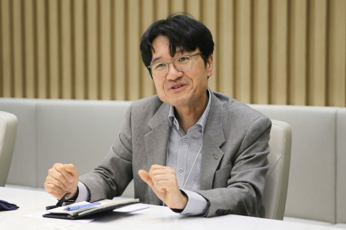
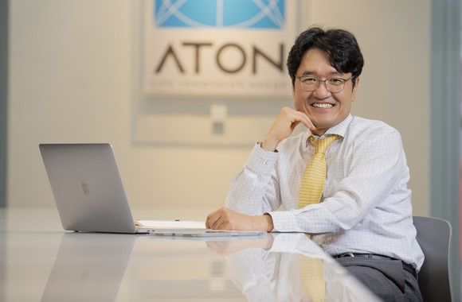

모든 산업 분야에서 보안은 높은 중요도를 지닌다. 그중에서도 금융권은 매일 수많은 금전 거래가 이뤄지는 영역인 만큼 보안에 특히 예민하다. 많은 보안기업들이 금융권을 겨냥한 제품 개발에 열을 올리는 이유다. 이런 가운데 핀테크 보안기업 아톤은 최근 몇 년간 업계에서 두각을 드러내며 영향력을 키워나가고 있다.

아톤은 모바일 일회용비밀번호(OTP) 서비스를 국내에 처음으로 선보인 기업이다. 초창기 게임 기업들을 중심으로 아톤의 OTP 솔루션을 이용했고 금융 분야 규제가 개선되면서 금융권으로 영역을 넓혔다. 지금에 이르러서는 금융권 모바일 OTP 시장에서는 가장 선두권 기업으로 자리매김한 상태다. 2022년 매출액 447억원으로 업계에서도 중견급 위치에 올랐다.
우상향 곡선을 이어가는 가운데 아톤은 최근 내부 변화도 꾀했다. 지난 3월31일 사업개발총괄이던 우길수 전무가 각자대표로 선임된 것이다. 김종서 대표와 함께 아톤을 이끌게 된 그는 <디지털데일리>와의 인터뷰에서 취임 일성으로 “지속 성장하는 기업으로 만들고 싶다”고 말했다.
그는 “지속 성장하려면 현재의 제품과 서비스에 만족하지 않고 새로운 사업모델을 계속해서 만드는 것이 중요하다. 지속가능한 성장과 함께 안정적인 사업구조를 훨씬 더 공고히 해야 기업의 스케일업할 수 있을 것”이라며 “보안·인증 솔루션 사업을 더욱 확대하고 신규 서비스를 출시함으로써 경쟁력을 키워나갈 것”이라고 피력했다.
◆온 국민 괴롭히던 공인인증서 대체한 ‘간편인증’ 바람
우 신임 대표는 KG티지, 유라클, 드림시큐리티, KG모빌리언스 등에서 금융 및 인증 등의 업무를 맡아온 인물이다. 2018년 김종서 대표의 설득으로 아톤에 합류하게 됐다. 아톤에서는 사업 및 개발 분야를 총괄해왔다. 김종서 대표가 인수합병(M&A) 및 해외진출 등에 집중하고 우 대표가 사업 전반을 지휘한다.
아톤의 핵심 제품은 애플리케이션(앱)에 화이트박스 암호화 기술 기반의 소프트웨어(SW)형 특수 보안 영역을 제공하는 ‘엠세이프박스(mSAFEBOX)’, 모바일용 일회용비밀번호를 제공하는 ‘엠오티피(mOTP)’, 기존 공인인증서를 대체하는 사설인증 솔루션 ‘엠피케이아이(mPKI)’ 등이다.
이중 핵심이 되는 것은 엠세이프박스다. 통상 스마트폰에서 앱을 실행할 경우 해커와 같은 악의적인 사용자가 중요 정보에 접근할 수 있는데, 엠세이프박스는 안전한 특수 보안 영역에서 앱이 실행되게 함으로써 만약의 사태를 예방한다. 여기에 더해 엠오티피가 제3자의 접근을 차단하고, 엠피케이아이를 PIN이나 지문으로도 전자서명을 할 수 있도록 지원한다.
우 대표는 “아톤은 안전한 저장매체 기술을 활용한 모바일 OTP 및 PKI 솔루션을 보유 중이다. 사설인증 솔루션부터 전자서명인증사업자에 대한 솔루션까지, 전자서명 전반을 아우르는 사업모델을 갖추고 있다. 솔루션 판매 수익에 더해 라이선스와 유지보수 등을 통해 수익을 거두는 중”이라고 전했다.
완성된 SW를 제공하는 것 외에 핀테크 관련 앱이나 플랫폼을 구축 또는 통합하는 업무도 수행한다. KB국민은행의 ‘KB스타뱅킹’, ‘리브(Liiv)’ 등이 아톤의 작품이다. 대다수가 은행 및 증권사와 같은 금융권 기업이지만 이동통신사나 공공기관 등 인증이 필요한 곳에서도 아톤의 기술을 다수 채택했다.
이와 같은 아톤의 기술이 주목받는 배경에는 ‘보안은 불편하다’는 공식을 깼다는 데 있다. 아톤의 보안 솔루션은 KB국민은행, IBK기업은행, 신한은행, NH농협은행 등 대형 금융사 전반에서 도입해 사용 중이다. 이제는 금융권의 기본값으로 자리한 6자리 비밀번호나 패턴, 지문인증 등 간편인증 전반에 아톤의 기술이 적용됐다. 과거 복잡한 영문, 숫자, 특수문자를 섞은 비밀번호를 사용하면서도 불안에 떨었던 과거와는 달라진 상황이다.
◆공인인증서 폐지에 코로나19··· 아톤 성장에 불 지폈다
꾸준히 우상향하던 아톤의 성장은 2021년부터 가팔라졌다. 2020년 아톤의 매출액, 영업이익은 290억원, 20억원이었는데 2021년에는 매출액 432억원, 영업이익 91억원으로 각각 49%, 341.4%로 수직 상승했다. 창사 이래 최대 실적인데, 2022년에는 영업이익이 소폭 감소했으나 매출액은 447억원으로 성장을 이어갔다.
이와 같은 성장의 배경에는 크게 2개 요인을 꼽을 수 있다. ‘공인인증서 폐지법’이라 불리운 전자서명법 개정과 코로나19다.
전자서명법 폐지로 전자서명 시장을 독점하던 공인인증서의 영향력이 축소됨에 따라 사설인증서의 시대가 도래했다. 아톤은 이동통신3사의 사설인증서인 ‘패스(PASS)’의 인증서를 책임졌다. 패스를 통해 전자서명을 할 경우 일부 수익금이 아톤으로 이어진다. 패스를 통해 입증한 기술력은 기타 기업들의 사설인증서 수요로 이어졌다.
사회에 큰 아픔을 남긴 코로나19도 아톤에겐 기회로 작용했다. 코로나19로 금융사들은 오프라인 점포를 줄이고 디지털 금융 분야를 확대했는데, 시스템 구축이나 보안 솔루션 및 사설인증서 등의 수요가 폭발적으로 상승했다.
아톤의 사업 분야 중 하나인 ‘티머니 솔루션’의 경우 매출 코로나19로 인해 매출 규모가 급감했다. 아톤은 교통카드 티머니의 IC칩 구동을 위한 종합 SW를 제공 중이다. 티머니 판매량이 늘수록 아톤의 수익도 커지는데, 코로나19로 한국을 찾는 해외 관광객이 급감해 관련 매출이 대폭 줄었다. 코로나19 유행 이전인 2019년 티머니 솔루션 매출은 52억원이었는데 2020년 22억원, 2021년 9억원으로 급감했다.
그러나 코로나19 여파가 차츰 가라앉으며 관련 매출액도 회복되고 있다. 2022년 티머니 매출액은 15억원이다. 올해는 더 큰 성장이 기대된다.

◆“움직이지 않으면 가라앉는다··· 지금의 성장에 안주하지 않아야”
올해 경기침체는 아톤으로서도 좋지 않은 신호다. 경기 불확실성으로 인해 기업들이 긴축 경영에 돌입하며 투자를 축소하는 만큼 영향을 받을 수 있기 때문이다. 그러나 우 대표는 이와 같은 대외 여건 악화에 크게 개의치 않는다고 답했다.
그는 “오히려 기회라고 생각한다. 핀테크 스타트업의 경우 투자가 경색돼 어려움을 겪고 있지만 아톤은 안정적인 사업모델을 마련해둔 만큼 큰 어려움이 없다. 기업들 역시 디지털 전환에 대한 투자를 이어가는 중인데, 연구개발(R&D) 투자를 더 과감하게 할 때라고 판단하고 있다. 삼성전자의 ‘초격차’ 전략을 하듯, 보안·인증 사업에서 초격차를 만들 것”이라고 피력했다.
그 일환으로 클라우드 기반의 제품 출시도 예고한 상태다. 금융권의 클라우드 도입이 활발해짐에 따라 사설인증서 처리 방식도 앱에서 클라우드로 확대되고 있다는 것이 우 대표의 설명이다. 이에 아톤은 클라우드 기반의 서비스형 소프트웨어(SaaS) 보안인증 서비스를 개발 중이다. 현재 대고객 서비스 직전으로 곧 출시될 예정이다.
우 대표는 올해 목표로 세자릿수 영업이익을 제시했다. 또 결과보다는 과정이 중요하다며 가파른 성장보다는 지속성장 가능한, 5년이나 10년 뒤를 대비하는 것에 주안점을 두겠다는 입장이다. 그를 위해 직원과 성과를 공유하는, 동기부여를 할 수 있도록 하는 복지 강화 방안도 고심 중이라고 밝혔다.
그는 “대표로서 과거 칭기스칸이나 나폴레옹과 같은 ‘나를 따르라’라고 이끄는 리더십보다는, 직원들이 잘할 수 있는 환경을 만들어주고 지원하는 리더십이 중요하다고 생각한다. 아톤과 같은 정보기술(IT) 기업의 핵심자산은 사람이고, 이들의 역량이 곧 회사 경쟁력”이라고 강조했다.
디지털데일리 이종현 기자